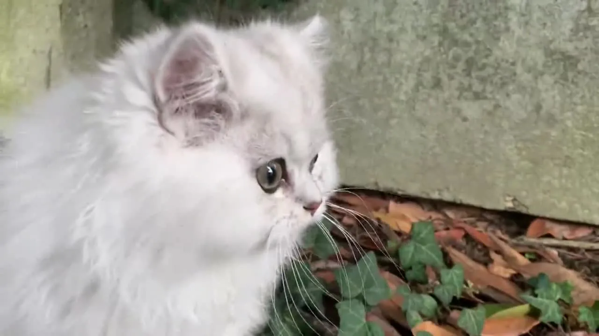

Élevage familial à Othis, en Seine-et-Marne
Des British élevés dans la maison, au milieu des câlins
British Shorthair et British Longhair inscrits au LOOF. Nos chatons grandissent dans le bruit de la vie de famille et partent à douze semaines, prêts à aimer la vôtre.
Pedigree LOOF Parents dépistés Départ à 12 semaines Élevage déclaré
Comment ça se passe
On échange
Par téléphone ou par mail, sans engagement. On parle de votre foyer et de ce que vous cherchez.
Vous venez les voir
Sur rendez-vous, chez nous. Vous rencontrez la mère et vous voyez où ils grandissent.
Il vous rejoint
À douze semaines, identifié, vacciné, avec son pedigree et tout son dossier.
Pourquoi nous
Un élevage qui se regarde de près
Nous faisons peu de portées, nous testons nos reproducteurs et nous vous montrons tout. Un élevage sérieux n'a rien à cacher, et surtout pas ses résultats.
Des parents dépistés
Échographie cardiaque pour la HCM, test ADN pour la PKD, dépistage FIV et FeLV, groupe sanguin. Les résultats et leurs dates figurent sur la fiche de chaque reproducteur.
Élevés à la maison
Pas de chatterie séparée. Aspirateur, enfants, visiteurs, télévision : nos chatons connaissent déjà tout cela le jour de leur départ.
Tout est écrit
Contrat lisible avant réservation, certificat d'engagement, certificat vétérinaire de moins de huit jours, pedigree LOOF. Aucune promesse qu'on ne pourrait pas tenir.
Douze semaines, jamais huit
La loi autorise huit semaines. Nous gardons nos chatons quatre semaines de plus, le temps du deuxième vaccin et de la vraie socialisation.
Nous reprenons nos chats
À n'importe quel âge et quelle que soit la raison, plutôt que de les savoir en refuge ou sur une petite annonce. C'est écrit dans le contrat.
Joignables après
Une question à trois mois, à trois ans ou à dix ans : vous avez notre numéro et nous répondons. C'est la partie du métier que nous préférons.

La race
Le chat qui vous suit de pièce en pièce, sans rien demander
Le British est un chat posé. Il ne saute pas sur les meubles, il ne réclame pas, il ne crie pas. Il s'installe dans la pièce où vous êtes et il attend. Cette discrétion, c'est sa force en appartement et son piège : un British qui s'ennuie ne se plaint pas, il dort et il grossit.
Shorthair ou Longhair, c'est le même chat sous deux fourrures. Les deux naissent dans les mêmes portées, et le choix tient au brossage que vous êtes prêt à lui offrir.
Livre d'or
Des nouvelles de nos chatons
Nos chats
Les reproducteurs de la chatterie
Chaque fiche indique la robe et son code EMS, la couleur des yeux, la date de naissance et les dépistages. C'est ce qu'un éleveur doit pouvoir montrer.
Une question, un projet d'adoption ?
Nous répondons à tout le monde, même quand nous n'avons pas de chaton disponible. Et nous préférons vous dire franchement d'attendre plutôt que de vous faire patienter pour rien.